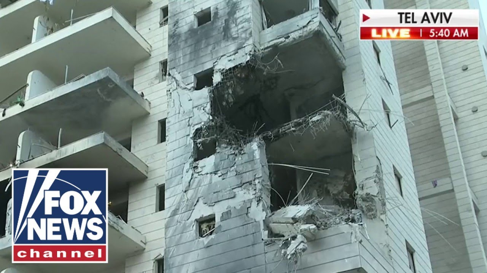

【突发：伊朗导弹袭击以色列中部居民区】
Summary: The reporter in Tel Aviv describes the chaotic scene after a missile strike, showing first responders accounting for residents, assessing damage, and searching for survivors amid alarms and debris, while highlighting their volunteer efforts and emotional challenges.
摘要： 记者在特拉维夫描述了导弹袭击后的混乱场景，展示急救人员核对居民信息、评估损失并在警报和废墟中搜寻幸存者，同时强调了志愿者的付出和情感挑战。

⏱️ Estimated Reading Time: 45 min
📚 六级生词 📚 雅思生词 📚 托福生词 📚 专八生词 📚 SAT生词 📚 考研生词 📚 GRE生词 📚 高考生词
This is a Fox News alert.
这里是福克斯新闻紧急播报。
I'm Ashley Strowmire live in New York.
我是阿什莉·斯特罗迈尔，在纽约现场报道。
Crews in Israel are searching for survivors following Iran's latest barrage of missiles and drones.
以色列救援人员正在搜寻幸存者，此前伊朗发动了最新一轮导弹和无人机袭击。
We're going to get right to Trey Yst who is live on the scene in Tel Aviv.
我们将立即连线在特拉维夫现场的记者特雷·伊斯特。
Trey, tell us what you're seeing from what I'm hearing from our people in the booth.
特雷，请告诉我们你从现场看到的情况，以及我们从演播室听到的信息。
It's pretty volatile where you are right now.
你现在所在的地方局势非常不稳定。
Yeah, Ashley, there was just a large-scale Iranian ballistic missile barrage toward Tel Aviv.
是的，阿什莉，刚刚有一波大规模的伊朗弹道导弹袭击了特拉维夫。
One of those missiles slipped past air defense systems and slammed into the buildings behind me.
其中一枚导弹突破了防空系统，击中了我身后的建筑物。
This is a residential area of Tel Aviv.
这里是特拉维夫的居民区。
This is an area that people are known and we're just going to move one second because they're trying to clear out this area, Ashley, as we talk.
这是一个人们熟悉的区域，我们稍等一下，因为他们在清理这个区域，阿什莉，我们正在报道。
And my cameraman is going to show you the scene here as we move.
我的摄像师将向你展示这里的场景，我们正在移动。
But again, this is in Tel Aviv, Israel's second largest city.
再次强调，这是在以色列第二大城市特拉维夫。
And you can see that these crews are trying to get a fire under control.
你可以看到这些救援人员正在试图控制火势。
They are looking through these buildings to make sure that no one is trapped under the rubble.
他们正在检查这些建筑物，确保没有人被困在废墟下。
I can count 1 2 3 4 five buildings directly affected by this.
我可以数出1、2、3、4、5栋建筑物直接受到这次袭击的影响。
And again, the police are just moving people around here as they try to clear a path for the first responders and ambulances that have arrived here on the scene.
警方正在疏散人群，为已经到达现场的急救人员和救护车清理道路。
Ashley, as we move forward here, we will learn more and be able to report more about the location, but broadly I can say that we are in Tel Aviv, Israel's second largest city.
阿什莉，随着我们继续前进，我们将了解更多信息并报道更多关于这个地点的细节，但总的来说，我们位于以色列第二大城市特拉维夫。
The army and police are aware of our location.
军队和警方知道我们的位置。
We coordinate these things to make sure that we're not giving away any any details uh that could be harmful to first responders of the people on the scene.
我们协调这些事项，确保不会泄露任何可能对现场急救人员或民众有害的细节。
But just to describe what we are seeing here, when we arrived, it was still dark.
但简单描述一下我们在这里看到的情况，我们到达时天还很黑。
There was a man who was injured.
有一名男子受伤。
His name was Gal.
他的名字叫盖尔。
He was bleeding from his legs.
他的双腿在流血。
And I talked to him and I said, "What happened? How how are you? How are you feeling?"
我问他：“发生了什么？你怎么样？感觉如何？”
He said, "My ears are ringing. I can barely hear you."
他说：“我的耳朵在嗡嗡响，几乎听不见你说话。”
He said, "He has glass injuries to his legs."
他说：“他的腿被玻璃划伤了。”
And he was waiting to get medical attention.
他正在等待医疗救助。
He was just one of a number of people who was injured.
他只是众多受伤者之一。
And you can see there's about 10 or 15 journalists at this location we're at.
你可以看到我们所在的位置有大约10到15名记者。
And we're just going to push back a little bit here, Ashley.
我们稍微后退一点，阿什莉。
But again, the latest information that we have, there has been a ballistic missile attack launched by Iran at central Israel.
我们掌握的最新信息是，伊朗向以色列中部发射了弹道导弹袭击。
One of those missiles slipping past air defense systems and slamming into the ground below, causing damage to four or five buildings in Tel Aviv.
其中一枚导弹突破了防空系统，击中地面，对特拉维夫的四五栋建筑物造成破坏。
First responders, you can see are here on the scene.
你可以看到急救人员已经到达现场。
They have gloves, hard hats, and torch lamps.
他们戴着手套、安全帽，拿着手电筒。
They are now going into the buildings to try and see if they can find any survivors or other people that were injured.
他们现在进入建筑物，试图寻找幸存者或其他受伤者。
I want to just show you across the street here, Ashley.
阿什莉，我想向你展示街对面的情况。
There's a massive amount of damage to this very tall building.
这栋高楼遭到了严重破坏。
And it just shows you the blast wave and radius of such a blast when something like this takes place.
这展示了此类爆炸的冲击波和影响范围。
And so we will find out more information in the minutes, hours ahead.
我们将在接下来的几分钟或几小时内了解更多信息。
But what we know right now, a number of people have been injured.
但目前我们知道，有多人受伤。
We can confirm that because we saw it when we arrived here on the scene.
我们可以确认这一点，因为我们到达现场时看到了。
When we got here, this entire parking lot was on fire.
我们到达时，整个停车场都在燃烧。
Cars were crushed and smashed and first responders ran into the blaze and they started to put out the fire.
汽车被压碎和撞毁，急救人员冲进火场开始灭火。
As the fire died down, we could really start to see the full scope of what happened here and start to count the buildings that were affected by this blast.
随着火势减弱，我们才能真正看到这里发生的全部情况，并开始统计受这次爆炸影响的建筑物数量。
1 2 3 4 5 six.
1、2、3、4、5、6栋。
There's shrapnel to this building.
这栋建筑物上有弹片痕迹。
Seven.
第七栋。
This entire facade over here on this building destroyed.
这栋建筑物的整个立面被摧毁。
And it just gives you a sense of how destructive these Iranian missiles are when they land in the center part of Israel.
这让你感受到这些伊朗导弹在以色列中部落地时的破坏力。
These densely populated areas filled with Israeli civilians.
这些人口密集的区域住满了以色列平民。
Ashley, you know, Trey, when you were talking, I saw in the video there was a little girl with her backpack on walking with her dad and it looked like her brother.
阿什莉，特雷，你在说话时，我在视频中看到一个小女孩背着书包和她的爸爸走在一起，看起来还有她的兄弟。
Um, and I just want to point out it's 5:15 a.m. in Tel Aviv.
我想指出，现在是特拉维夫凌晨5点15分。
I can imagine this is when people are starting to get up and they're going to school and trying to live their normal lives.
我可以想象，这是人们开始起床、上学、试图过正常生活的时候。
How does this attack and what you're seeing on the ground compare to what you saw when this first initially happened last week on that first attack?
这次袭击和你在地面看到的情况，与上周第一次袭击发生时你看到的情况相比如何？
Yeah, Ashley, I'm going to have my cameraman Yaniv show you the scene here in Tel Aviv.
是的，阿什莉，我将让我的摄像师亚尼夫向你展示特拉维夫的现场情况。
But that first attack when we were live on Fox and you saw those ballistic missiles raining down on this city, this was the first indication that the Iranians do possess the ability to strike deep into Israel and cause significant damage.
但第一次袭击时，我们在福克斯新闻直播，你看到那些弹道导弹如雨点般落在这座城市，这是第一次表明伊朗确实有能力深入以色列境内发动袭击并造成重大破坏。
And when you see the scene here and we are shooting from just a small distance from the impact location again after checking with the police and checking with the army to ensure that we're not giving away any operational security we arrived here and and saw this was yet another missile attack causing this much damage.
当你看到这里的场景时，我们再次在与警方和军方确认后，从距离撞击地点很近的地方拍摄，以确保我们没有泄露任何行动安全信息，我们到达这里，看到这又是一次导弹袭击，造成了如此大的破坏。
They're using similar missiles as to your question that they used on the first day responding to the Israeli strikes targeting Iranian nuclear facilities and top IRGC officials.
正如你的问题所述，他们使用了与第一天类似的导弹，以回应以色列针对伊朗核设施和伊斯兰革命卫队高级官员的袭击。
What has changed though is as the pressure continues to increase on the Israeli air defense system, it starts to create a situation where the Israelis can't reload as quickly.
但变化的是，随着以色列防空系统的压力持续增加，开始出现以色列人无法快速重新装填的情况。
They can't shoot down all of this incoming fire.
他们无法击落所有来袭火力。
And then ultimately it puts Israel in a in a place where they have to simply tell the population to go into bomb shelters and and hope because as you can see with this damage here, Ashley, even if you are in a shelter, something fortified with concrete that normally Israelis would go to if there's an a rocket attack or something similar, it's not enough for these missiles.
最终，这使以色列陷入一种境地，他们只能告诉民众进入防空洞并祈祷，因为正如你在这里看到的破坏，阿什莉，即使你在防空洞里，那种通常以色列人在火箭弹袭击或类似情况下会去的混凝土加固设施，对这些导弹来说也不够。
These missiles are so large and they have such a large warhead on top that even being in a shelter doesn't necessarily mean that you will be protected, but it is certainly better than being on the street or just being near windows or or walls.
这些导弹如此之大，弹头如此之大，即使在防空洞里也不一定意味着你会受到保护，但这肯定比在街上或靠近窗户或墙壁要好。
Here at the scene, I'm just trying to as daylight is is starting to come together here, I'm trying to get a better picture of this area.
在现场，随着天色渐亮，我正试图更好地了解这个区域的情况。
Without giving away too much of the location, I will broadly say that this is an area.
在不泄露太多位置信息的情况下，我大致可以说这是一个区域。
It it's quite close to where we are reporting from in Tel Aviv often before this round of conflict began.
它非常接近我们在这轮冲突开始前经常在特拉维夫报道的地方。
And there are coffee shops here.
这里有咖啡店。
There are often times people going for runs.
经常有人在这里跑步。
It's a residential area and it's an area that is now under direct fire from the Iranian regime.
这是一个居民区，现在正受到伊朗政权的直接攻击。
This speaks to to the targets that the Iranians are picking out.
这说明了伊朗人选择的目标。
They are not simply just targeting military installations in Israel.
他们不仅仅是以色列的军事设施为目标。
They are going after the heart of of cities.
他们瞄准了城市的心脏。
They are targeting residential areas.
他们以居民区为目标。
They are hitting apartment buildings.
他们袭击公寓楼。
You saw on Fox the images that we brought you from central Israel earlier today where they were digging through debris looking for for bodies.
你在福克斯新闻上看到了我们今天早些时候从以色列中部带来的图像，他们在废墟中挖掘寻找尸体。
And there was a man there and he was sitting in a wheelchair in a hospital gown.
那里有一名男子，他穿着病号服坐在轮椅上。
And we talked to his friend and he said he was pulled from the rubble.
我们和他的朋友交谈，他说他被从废墟中拉出来。
His father was still stuck under the debris.
他的父亲仍然被困在废墟下。
They took this man to the hospital and he insisted that the doctors and nurses take him back to the scene and he wait as these first responders try to dig out his father.
他们把这名男子送到医院，但他坚持要求医生和护士把他带回现场，他等待急救人员试图挖出他的父亲。
These are humans.
这些都是人。
They're just like us.
他们和我们一样。
They like to go to coffee shops.
他们喜欢去咖啡店。
They like to go to the beach.
他们喜欢去海滩。
They're peaceful people.
他们是和平的人。
And they have been targeted following the Israeli strikes against Iran.
在以色列袭击伊朗之后，他们成为了目标。
And as you can see in the distance behind me, this is a very difficult moment for this country because officials and sources that we talk to every day tell us the following days are going to be incredibly difficult.
正如你在我身后远处看到的，对这个国家来说这是一个非常艰难的时刻，因为我们每天交谈的官员和消息人士告诉我们，接下来的几天将非常艰难。
Ashley, they will take casualties.
阿什莉，他们将承受伤亡。
There will be significant destruction to residential areas of this country.
这个国家的居民区将遭受重大破坏。
But the Israelis say they knew this was the price going into an operation that they started.
但以色列人表示，他们知道这是他们开始行动所要付出的代价。
They started with strikes against nuclear facilities in Iran.
他们以袭击伊朗的核设施开始。
They started the strikes against the ballistic missile program of Iran and they took out officials from the IRGC.
他们开始袭击伊朗的弹道导弹计划，并消灭了伊斯兰革命卫队的官员。
But the Israelis tell us this was the price that they knew they would have to pay in order to reduce those threats against the state of Israel and to try to stabilize a region that is rapidly unraveling.
但以色列人告诉我们，这是他们知道必须付出的代价，以减少对以色列国家的威胁，并试图稳定一个迅速解体的地区。
Ashley, yeah, and you make a very good point.
阿什莉，是的，你说得非常好。
It's a residential area and obviously you don't want to give anything away past that, but these are people just living their lives.
这是一个居民区，显然你不想透露更多信息，但这些人只是在过他们的生活。
This is exactly the type of thing we do.
这正是我们所做的事情。
We get up, we go to school, we take our kids to school, we go to work, we go sit down and have coffee with our family and our friends, but this is what they're having to deal with today, which is a Monday morning.
我们起床，去上学，送孩子上学，去工作，坐下来和家人朋友喝咖啡，但这是他们今天不得不面对的事情，这是一个星期一早上。
It's supposed to be a normal Monday morning for them.
这应该是他们一个正常的星期一早上。
Um, so Iran has made it clear that they don't care about the loss of life that is happening in Israel when they send these rockets into these residential areas.
伊朗已经明确表示，当他们向这些居民区发射火箭弹时，他们不在乎以色列发生的生命损失。
Um, have you seen is it still too early or have you seen anybody be brought out of these buildings?
你是否看到——现在是否还为时过早——或者你是否看到有人被从这些建筑物中救出？
Have have you been able to speak to anyone other than the man you spoke to that you referenced?
除了你提到的那名男子，你是否还能和其他人交谈？
We saw a couple people being brought out of this area.
我们看到有几个人被从这个区域救出。
The concern is that many of them are trapped in these partially collapsed buildings and that's why these first responders have made sure that all of the crews that have arrived here are at a safe distance.
令人担忧的是，他们中的许多人被困在这些部分倒塌的建筑物中，这就是为什么这些急救人员确保所有到达这里的救援人员都保持安全距离。
They're going into these buildings and starting to dig and try to get information if anyone's trapped under the debris.
他们进入这些建筑物，开始挖掘并试图获取信息，看看是否有人被困在废墟下。
But that man that we talked to, Gal, he was still in shock.
但我们交谈的那名男子，盖尔，他仍然处于震惊中。
And I I just asked him, I said, "A," which is bro in Hebrew, "Are you okay?"
我只是问他：“兄弟，”在希伯来语中是“兄弟”，“你还好吗？”
He said, "He's okay."
他说：“他还好。”
But his ears were ringing because the explosion was so loud.
但他的耳朵在嗡嗡响，因为爆炸声太大了。
He didn't have a bomb shelter in his building.
他的建筑物里没有防空洞。
So he went to the stairwell.
所以他去了楼梯间。
It's the next best thing for Israelis who live in older buildings in cities like Tel Aviv.
对于住在特拉维夫等城市老建筑中的以色列人来说，这是次优选择。
And I don't even know that he noticed, but he was bleeding from both of his legs.
我甚至不知道他是否注意到了，但他的双腿都在流血。
He had injuries from from glass and metal.
他的腿被玻璃和金属划伤。
When the explosion happened, it it hit him.
爆炸发生时，他受到了冲击。
And you can only imagine he was in in a building that wasn't directly hit.
你可以想象，他在一栋没有被直接击中的建筑物里。
From what we understand, you can imagine the types of injuries that would happen to someone who was in one of those buildings.
据我们了解，你可以想象那些身处被袭建筑中的人会遭受何种伤害。
When you see someone like this, it really highlights what's happening here.
当你看到这样的场景时，它真正凸显了这里正在发生的一切。
It highlights the fact that the population is doing what they can when these alerts come in, but it does take time to get to shelters.
这凸显了一个事实：民众在警报响起时尽力应对，但赶到避难所仍需时间。
They do have a text message alert that goes out to people.
他们确实会向民众发送短信警报。
But at the end of the day, this is a volatile situation that Israeli officials say is in some ways the nightmare scenario they were trying to prepare for.
但归根结底，这是一个不稳定的局势，以色列官员称这在某种程度上是他们试图为之准备的噩梦情景。
Trey, when you talk about that text message system about those missiles incoming, do you know how long they have in advance before they know it's going to hit or at least in their general area?
特雷，当你谈到关于导弹来袭的短信预警系统时，你知道他们在导弹击中或至少抵达其大致区域前能提前多久收到预警吗？
So broadly they have about 10 minutes when they know missiles are being launched from Iran and as they get closer there's a 90-second warning and you start to hear the air raid sirens sounding across Tel Aviv.
大致来说，当他们知道导弹从伊朗发射时，他们有大约10分钟的预警时间；随着导弹逼近，会有90秒的警报，这时你会听到特拉维夫全市响起空袭警报。
And that's the moment that if you're not already in a shelter you need to get to one or to get to cover.
那一刻，如果你还未进入避难所，就需要立即寻找掩护或赶往避难所。
The issue is that when these attacks happen in the middle of the night it's challenging.
问题在于，当这些袭击发生在深夜时，情况会非常棘手。
Sometimes people are so exhausted they sleep through the alarms.
有时人们过于疲惫，以至于睡过了警报。
They don't see the text or they simply just don't go to the shelter and it can be deadly as we saw today.
他们没看到短信，或者干脆没去避难所，而这可能是致命的，正如我们今天所见。
They were pulling bodies out of the rubble of this apartment building.
他们正从这栋公寓楼的废墟中拖出尸体。
And again, I just want to show you the scene here, Ashley, as the sun rises here in Tel Aviv.
阿什莉，我想再次向你展示这里的场景，此刻特拉维夫的太阳正在升起。
You can see the aftermath of this strike more clearly.
你可以更清晰地看到这次袭击的后果。
I have been to this area, and I'm being again very careful about talking about this.
我曾多次到访这一区域，此刻我再次谨慎地谈论此事。
I've been to this area countless times.
我来过这里无数次。
It is an area with coffee shops.
这是一个有咖啡馆的区域。
It is an area filled with a very popular spot to live as a young person in Tel Aviv because you can run.
这里是特拉维夫年轻人居住的热门地点，因为你可以跑步。
You can end up going to areas where other people gather and it is now the site of a ballistic missile attack and a tragedy for the Israeli people.
你可以去其他人聚集的地方，而这里现在成了弹道导弹袭击的地点，是以色列人民的悲剧。
You can see right now they're taking a drone into the air to see if they can gather any information from the rooftops and see if anyone was on these upper floors.
你现在可以看到他们正放飞无人机，试图从屋顶收集信息，查看是否有人在这些高层。
Ashley Trey, you said that you saw bodies being brought out.
阿什莉·特雷，你说你看到尸体被抬出。
Bodies being brought out of this particular missile strike.
尸体正从这次特定的导弹袭击中被抬出。
Earlier in the day, we were at another site where first responders were pulling bodies out.
今天早些时候，我们在另一个地点，救援人员正在那里拖出尸体。
And as they were pulling those bodies out from a different area of central Israel, not this location, they had the media step back as a sign of respect.
当他们从以色列中部的另一个区域（不是这里）拖出尸体时，他们让媒体后退以示尊重。
And this is something that we often adhere to.
这是我们经常遵守的原则。
I remember being here on October 7th and in the days after when they were pulling bodies out of the police station in the southern city of Sderot and other places.
我记得10月7日及之后几天在这里的情景，当时他们正从南部城市斯德洛特警察局和其他地方拖出尸体。
We try to do our best to gather the information that we need to gather to tell the world what's happening here while taking into account that these are people with families and also taking into account the serious operational security issues as this war continues.
我们尽力收集必要的信息，向世界讲述这里发生的一切，同时考虑到这些人都有家庭，并顾及随着战争持续而出现的严重行动安全问题。
And as we move forward here and I just want to just show you what it looks like down this sidewalk.
随着我们继续前进，我想向你展示这条人行道上的景象。
You can just see the amount of debris and leaves coming from these trees.
你可以看到大量的碎片和从这些树上掉落的叶子。
There are buildings that are packed with shrapnel marks and there are storefronts that are completely smashed.
建筑物上布满弹片痕迹，商店橱窗完全粉碎。
Yaniv, if you'll come with me here, I just want to show you care, watch your step, but I just want to show you inside this store the destruction.
亚尼夫，如果你跟我来，我想向你展示这里的破坏，小心脚下，但我想让你看看这家商店内部的毁坏情况。
And actually, this is an explosion that happened less than an hour ago.
实际上，这是一小时前发生的爆炸。
I mean, we have just arrived on the scene, but you see the amount of destruction in this store.
我们刚刚抵达现场，但你可以看到这家商店的破坏程度。
This is a convenience store, a corner store.
这是一家便利店，街角商店。
It has things like paper towels and flip-flops and batteries, things that people would need if they're living in this area of Tel Aviv.
里面有纸巾、人字拖和电池等生活必需品，是居住在特拉维夫这一区域的人们需要的物品。
And it has been completely destroyed.
而现在它已被完全摧毁。
Like I said before, this is an area that is packed with civilians.
正如我之前所说，这是一个挤满平民的区域。
There are no military locations close to where we are.
我们附近没有军事地点。
We will have more information to report hopefully later in the day about the significance of this area.
我们希望今天晚些时候能报道更多关于这一区域重要性的信息。
I don't want to get into it now, but people will talk about it later today.
我现在不想深入讨论，但人们今天晚些时候会谈论它。
Certainly, in terms of what happens now, these first responders will stay on the scene.
当然，就目前而言，这些救援人员会留在现场。
They'll try to gather as much information as they can from people who came out of these buildings to know if anyone was trapped.
他们会尽力从这些建筑中出来的人那里收集尽可能多的信息，以了解是否有人被困。
Just give me one second.
稍等片刻。
Stay with me here.
跟我待在这里。
Say hi.
打个招呼。
A little bit.
简单说几句。
Can you just tell us a little bit about the scene here and what you've seen since you arrived a little bit in English.
你能用英语简单告诉我们这里的场景以及你到达后看到的情况吗？
We're live to America.
我们正在向美国直播。
What should people know?
人们应该知道什么？
Just in English on No, introduce it.
就用英语，不，介绍一下。
And what should people know about what happened here?
人们应该知道这里发生了什么？
There is a missile hit in the street and there is a damage for some building.
导弹击中了街道，一些建筑物受损。
We take off all the fire and search after injuries and the people.
我们扑灭了所有火灾，并搜寻伤者和人员。
Are you worried that there could be people under the rubble?
你担心废墟下可能有人吗？
Yeah, until we not get into the building we are still worried that there is some people.
是的，在我们进入建筑之前，我们仍担心下面有人。
Thank you so much for speaking with us.
非常感谢你接受我们的采访。
And so you can see this is a local fire personnel.
你可以看到这是一位当地的消防人员。
There are medics on the scene.
现场有医护人员。
But he just there talked about what is the biggest concern right now, Ashley, and that is the possibility that there are people trapped under the rubble and debris from these collapsed buildings.
但他刚才谈到了目前最大的担忧，阿什莉，那就是可能有人被困在这些倒塌建筑的废墟下。
And that's really in the minutes and hours ahead.
这确实是接下来几分钟和几小时内的关键问题。
And these are critical minutes because if people are injured and they survive the initial blast, they want to get to them as quickly as possible.
这几分钟至关重要，因为如果有人受伤并在最初的爆炸中幸存，他们希望尽快找到他们。
In the distance, they're currently setting up a tent.
远处，他们正在搭建一个帐篷。
We have seen this tent before.
我们之前见过这种帐篷。
And this tent is used for people to check in in the neighborhood and they will give their names and they will give their addresses and any relatives or friends or family members that they have in the area to ensure that they can account for everyone.
这个帐篷用于社区居民登记，他们会提供姓名、地址以及在该区域的任何亲友信息，以确保能统计到所有人。
Right now there are people unaccounted for.
目前仍有人下落不明。
You heard directly from that local fire chief still as we speak right now Ashley and you're going to see it in a moment.
阿什莉，你现在直接听到了当地消防队长的说法，稍后你会看到这一幕。
They are bringing in stretchers preparing for the worst.
他们正抬进担架，为最坏情况做准备。
We'll be very careful about what we show you here live.
我们会非常谨慎地选择直播内容。
And in the distance there are ambulances and they're waiting to just see.
远处有救护车，他们正在等待观察。
And here's one of those orange stretchers that's being taken in by these first responders on the scene who immediately rushed to this site.
这是一副橙色担架，正由第一时间赶到现场的救援人员抬入。
Again, when we arrived here, everything was on fire.
我们到达这里时，一切都在燃烧。
You couldn't even see the buildings.
你甚至看不到建筑物。
There were so many flames.
火焰如此之多。
As the firefighters got them extinguished, we started to gather more about what happened here, which was clearly a direct hit of an Iranian ballistic missile.
随着消防员扑灭火焰，我们开始了解更多这里发生的事，显然这是一枚伊朗弹道导弹的直接命中。
Ashley.
阿什莉。
Yeah.
是的。
Again, I just want to point out to anyone who's watching, whatever you're seeing on your screen behind Trey in the damage, whatever it looks like in this scene, it is a million times worse in real life where Trey is.
我想再次向所有观众指出，无论你在屏幕上看到特雷身后怎样的破坏，无论这一场景看起来如何，特雷所在的实际现场要糟糕百万倍。
You couldn't even fathom to explain and describe.
你甚至无法想象和描述。
I mean, you're doing a great job of describing what you're seeing, Trey.
特雷，你在描述所见方面做得很好。
And you know just I we obviously want you to stay safe and it's just it's hard to see and it's hard to watch.
你知道，我们显然希望你保持安全，这很难看到，也很难观看。
It's hard to talk about but also I want to talk about these first responders.
这很难谈论，但我也想谈谈这些救援人员。
They are worn completely thin doing this.
他们已精疲力竭。
Have what have they been telling you with the first responders and the crews, the rescue crews that you're talking to?
你接触的救援人员和队伍告诉了你什么？
How are they feeling because this is very tough on them?
他们感觉如何，因为这对他们来说非常艰难？
Yeah, Ashley, it's all hands on deck for these crews.
是的，阿什莉，这些队伍全员出动。
They are using the army and first responder units in the army to respond to these scenes.
他们动用军队和军队中的应急单位来应对这些场景。
And I talked to a few guys yesterday at a different site in central Israel, guys about my age, and I said, "Look, are you guys in the army all the time?"
昨天我在以色列中部的另一个地点与几个和我年龄相仿的人交谈，我问：“你们一直在军队中吗？”
And they said, "No, we're in what's called Miloim, reserve duty here."
他们说：“不，我们属于所谓的‘Miloim’，即这里的预备役。”
And they worked in high-tech jobs in Tel Aviv, and they have gone into the army.
他们在特拉维夫从事高科技工作，现在加入了军队。
They were called up because of this war that has now erupted between Israel and Iran.
他们因以色列和伊朗之间爆发的这场战争而被征召。
And they were at a site basically saying, "We never thought we were going to have to use these skills just given the fact that their unit is an emergency unit in the army.
他们在现场基本上说：“我们从未想过会用到这些技能，因为他们的部队是军队中的应急单位。”
It's a last resort for when other teams are overwhelmed, firefighters and medics in the area."
这是在其他队伍不堪重负时的最后手段，比如该地区的消防员和医护人员。
And so the fact that they were called up and responding to scenes, digging through rubble, looking for survivors, it speaks to just how challenging this moment is for Israel.
因此，他们被征召并响应现场，挖掘废墟，寻找幸存者，这说明了以色列此刻面临的挑战有多大。
And again, as we speak, the Israelis are continuing air strikes against positions inside of Iran.
而就在我们说话时，以色列人继续对伊朗境内的目标进行空袭。
And Iranian officials earlier in the day, just yesterday, talked about the fact that they're not willing to stop firing these ballistic missiles.
伊朗官员昨天早些时候还谈到他们不愿停止发射这些弹道导弹。
And the Israelis have indicated they're not willing to stop striking Iran.
而以色列人表示他们不愿停止打击伊朗。
So, this is far from over.
因此，这远未结束。
And the reality is that these major population centers like Tel Aviv are going to continue to pay a very heavy price with these missiles raining down.
而现实是，像特拉维夫这样的人口密集区将继续为这些如雨般落下的导弹付出沉重代价。
When this explosion happened, we were in a shelter in Tel Aviv, relatively far from here, not walking distance, and it shook the entire building that we were in.
爆炸发生时，我们在特拉维夫的一个避难所，离这里相对较远，步行无法到达，但它震动了我们所在的整栋建筑。
And I talked to a few people I know that live around here, and they said something terrible has happened.
我与几位住在这附近的熟人交谈，他们说发生了可怕的事情。
They could hear it.
他们能听到。
I could feel it when these strikes happen.
当这些袭击发生时，我能感觉到。
It shakes the ground and it destroys all of the buildings in its path in the blast radius of something like this.
它震动地面，并摧毁爆炸半径内路径上的所有建筑。
And again, as we get more light here, the scene is coming into reality.
随着天色渐亮，场景逐渐清晰。
The aftermath of this strike is coming into reality.
这次袭击的后果正逐渐显现。
And as you heard from that fire chief directly, Ashley, their biggest concern is that there are Israeli civilians trapped under the rubble.
阿什莉，正如你直接从消防队长那里听到的，他们最大的担忧是以色列平民被困在废墟下。
Trey, I don't know if you can if you're seeing what I'm seeing, but I'm seeing a baby that looks probably about eight months old being brought out, and it is absolutely heartbreaking.
特雷，我不知道你是否看到了我所看到的，但我看到一个大约八个月大的婴儿被抱出来，这绝对令人心碎。
We're going to actually move positions if you can stay with us here.
如果你能和我们待在这里，我们实际上要移动位置。
Yeah, of course.
是的，当然。
They're bringing babies out, they're bringing kids out.
他们正抱出婴儿，抱出孩子们。
I mean, this is just from what I'm seeing in your shot now.
这只是我现在从你的镜头中看到的。
I'm sure there's tons of children being brought out with their families that you're seeing right now.
我相信你现在看到有大量儿童正与家人一起被带出。
We're leaving.
我们要离开了。
Yes.
是的。
And that's part of what we're trying to do here is get a better picture of that.
这正是我们试图在这里做的部分工作——更全面地了解情况。
And, it's a bit of negotiation here with these first responders.
而且，与这些救援人员的沟通需要一些协商。
Of course, it's a very tense scene.
当然，这是一个非常紧张的场景。
But we when you move in these areas, their biggest concern is that there are buildings that could collapse.
但当你在这些区域移动时，他们最大的担忧是可能有建筑会倒塌。
There are Okay, just one second.
有——好的，稍等。
And stay with me, Ashley.
阿什莉，请继续跟着我。
And just stay with me, Ashley.
阿什莉，请先别离开。
We're trying to get to that area that you are discussing where people are being taken.
我们正试图前往你提到的有人被转移的区域。
Um, and so we're just walking here in Tel Aviv.
我们正在特拉维夫步行。
Thank you very much.
非常感谢。
But again, you're going to see the tent that I talked about as we walk by here.
再次提醒，路过时你会看到我之前提到的帐篷。
And actually, this is important to explain as we're we're live here, Ashley.
阿什莉，现在正在直播，这一点很重要。
The tent off to my right here is used by teams that are trained in first uh response.
我右侧的帐篷是受过急救训练的团队使用的。
They have computers and they have information about the local residents so that they can try to start accounting for people.
他们用电脑记录当地居民信息，以便统计人数。
And just stay with me here, Ashley, because we just need to watch where we're going.
阿什莉，请跟紧我，注意脚下。
Um, you're going to see a lot of first responders in this area.
你会看到该区域有许多急救人员。
Um, these are the teams that are waiting for people that are being taken taken out.
这些团队正在等待被救出的人员。
Are these meds?
这些是医护人员吗？
And just give give me one moment.
稍等片刻。
Yes, these are medic teams.
是的，这是医疗队。
And I'm going to have just show you a different vantage point here.
我将展示另一个视角。
You can see down here, these are all medics from United Herzah, United Hatah.
这里的医护人员来自联合Herzah和联合Hatah组织。
And just stay with me.
请继续跟着我。
I just need to talk to the team for one second.
我需要和团队简短沟通。
Ashley, we're going to stand right here.
阿什莉，我们暂时站在这里。
Um, and so we're just moving back a little bit here.
我们稍微后退一些。
Um, as these teams continue to work.
急救人员仍在工作。
Um, but I'll just show you a little bit more damage across the street here.
我将展示街对面更多损毁情况。
Ashley, again, this speaks to the blast radius when these things happen.
阿什莉，这再次说明了爆炸的影响范围。
And uh just be mindful of some of these signs.
注意这些标识。
Geneive, shoot this direction.
吉尼芙，拍这个方向。
And um if you look down here, you're going to see a lot of damage to storefronts.
往下看，店铺损毁严重。
You can hear those alarms that are going off.
能听到警报声响起。
And we won't stay in this location too long as to not uh to keep it so loud.
我们不会久留以免噪音过大。
But uh again, behind me in the distance, there are teams still going through this debris looking for any survivors that may be trapped still under the rubble.
远处有团队仍在废墟中搜寻可能的幸存者。
Ashley, you know, I I'm seeing um just in the the video box next to you, it looked like um an older woman being brought out.
阿什莉，我在你旁边的视频框里看到一位老妇人被救出。
Uh how many people, like I said, this is just what I'm seeing from the video that you guys are are shooting right now.
如我所言，这是从你们拍摄视频中看到的。
How many people are you seeing them bring out right now?
你们看到多少人被救出？
I I can't see the video that you are showing and from what we understand there are multiple at this vantage point we are not and we also understand there are multiple impact scenes and just stay with me here Ash I'm going to get away from this loud noise so that you can hear me a little bit better.
阿什莉，我无法看到你们播放的视频，据我们了解有多个撞击点，请跟紧我，我要远离噪音让你听清。
Um we understand that there are multiple impact scenes and so it may be somewhere else in central Israel.
我们了解到存在多个撞击点，可能在以色列中部其他区域。
It may be in a location close to here.
也可能在附近。
Um, and I'm just going to show you here is these teams of first responders, they have all of this gear ready.
我将展示这些急救团队，他们装备齐全。
They're prepared for these scenarios.
他们为此类场景做好了准备。
They're often considered worst case scenarios, but they they are prepared.
尽管是最坏情况，但他们已准备充分。
They're ready.
他们严阵以待。
And that is what we're seeing now, the plan into action.
这就是我们看到的预案实施。
But I think what is the most important point to this and I'm just going to show you this area.
最重要的是这个区域。
And before I show it to you, you need to stay one second.
展示前请稍等。
Ashley, stay pointed here.
阿什莉，镜头对准这里。
I'm going to give you some instructions because again I don't want to give away the location that we're at.
为避免暴露位置，我需要指导拍摄。
Try to just shoot the front of this location.
请拍摄建筑正面。
Um, but if you if you look into here, wrong direction into here, you will see that this is a coffee shop.
如果转向这边，会看到一家咖啡馆。
There's no sign, doesn't tell you the exact location, but uh it's a coffee shop.
虽无招牌标明具体位置，但确实是咖啡馆。
It's where people gather and it's actually a relatively new coffee shop.
人们常聚集于此，这是家新开的店。
Um, this is two blocks away from the epicenter of this blast.
距离爆炸中心两个街区。
We're still as we speak and we'll pan over here.
我们正在平移镜头。
They are and you can see they're bringing in a generator there.
能看到他们正运来发电机。
They're they're trying to get this the situation under control.
他们试图控制局面。
Um I'm not sure where those images and actually here there's there's a dog that you're going to see over here.
不确定画面来源，但这里有只狗。
I think that's just someone else's dog.
可能是他人的宠物。
But you asked earlier about something that I I'll give you the answer to now as we're kind of moving here.
你之前的提问我现在回答。
I'm thinking about a lot of things at one time.
我同时处理多件事。
You asked earlier about the first responders, Ashley, and to tell you about them.
你问及急救人员的情况。
They're they're people, most of them, who have day jobs in high-tech or they work in uh in bars or restaurants, and they have volunteered in many cases to to come into a reserve role during this war and and to help and do what they can.
他们多数是高科技行业或餐饮业从业者，自愿在战时担任后备役尽力协助。
And so today we were at the scene and and there they were were in a circle and they were were basically trying to keep their spirits high understanding that the work that they were about to do is some of the most horrific work that you could imagine taking people's loved ones from under the debris in the aftermath of a ballistic missile strike.
今天他们在现场围成一圈互相打气，明白即将从导弹袭击后的废墟中搜寻遇难者是极其艰难的任务。
And that's exactly what is happening here behind me in Tel Aviv today following the latest strike.
这正是此刻特拉维夫发生的事。
And so when we think about the what they go through, you know, we we've seen a lot of this firsthand.
我们亲眼目睹他们的经历。
It's challenging to to process.
难以承受。
And there was a dog earlier today actually that they brought.
今天他们还带了只狗。
It was a resilience dog, but the first responders were going over to it.
这是只心理安抚犬，急救人员常与它互动。
And the dog's name was June.
它叫琼。
And it was a black lab with long hair.
是只长毛黑色拉布拉多。
And they were petting it.
他们抚摸它。
And it was just this moment of peace amid so much chaos here that reminded me of what this is all for in terms of responding to these scenes.
混乱中的片刻宁静让我明白救援的意义。
It's about trying to make people feel safe and comfortable.
旨在让人们感到安全与慰藉。
And so when I we talk about what it's for, why these first responders do what they do, that's why because they want to be in a situation where they can give back to their community and and ensure they can help in any way possible amid this war.
这就是急救人员的初衷——回馈社区，在战争中竭尽所能。
Yeah. It's a total hands on deck with everyone there.
是的，所有人齐心协力。
Like you said, they have other jobs.
如你所说，他们另有主业。
They're just they're just trying to help out.
只是尽力帮忙。
And that was my question. Are they how many first responders do they have?
我想问：有多少急救人员？
But if they're coming from other jobs and that's just them helping out, um that makes total sense.
若来自其他行业自愿协助，就说得通了。
Trey Inst, thank you so much for the work you're doing down there and giving us um some insight as to what's happening.
特雷·因斯特，感谢你的现场报道让我们了解情况。
Stay safe and we're going to be checking in with you as the news warrants.
注意安全，我们将持续关注。
Hey, Sean Hannity here.
我是肖恩·汉尼提。
Hey, click here to subscribe to Fox News YouTube page and catch our hottest interviews and most compelling analysis.
点击订阅福克斯新闻YouTube频道，获取最热访谈和深度分析。
You will not get it anywhere else.
独家内容，别无他处。